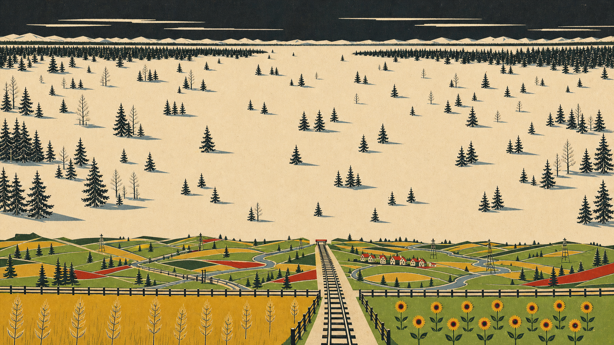

North Depth Workbench
Load one model result or matte overlay and compare it against the authoritative North source. This viewer does not alter production assets.

Load a generated depth visualization, matte, boundary overlay, or contact-sheet crop.
DA V2 Smallmodel
5bands
equal-rangequantization
0 far / 1 neardepth convention